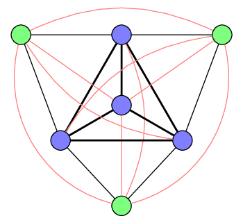

Sub- and supergraphs¶
Many questions in graph theory are revolving around the relationship between a graph and its sub-structures. Optimisation problems typically ask for the largest subgraph of a given type like a clique or a planar graph. They may also ask for the minimal modification necessary to ensure the existence of such a subgraph.
Clique¶
A clique is a fully connected graph. Hence, the fully connected graph \(K_n\) is also called an \(n\)-clique. The maximum clique problem is asking for the largest \(n\) such that a given graph has an \(n\)-clique as a subgraph.
Packing version¶
The packing version of the integer linear program for max clique is using a straight-forward formulation that tries to find as many vertices as possible such that every pair of selected vertices is connected by an edge.
The covering version below has a tighter integrality gap. (The gap for the packing version is \(\geq \frac{n}{2}\).)
Create an ILP for the maximum clique problem |
|
Get a list of vertices comprising a maximal clique |
Covering version¶
The covering version of the integer linear program for max clique is using the connection between clique and vertex cover in the complement. It excludes as few nodes as possible from a clique but needs to exclude at least one node from each pair not connected by an edge. Vertex cover has an integrality gap of 2.

A maximal clique (bold edges, blue vertices) and a vertex cover of the complement (red edges, green vertices).
Create an ILP for the maximum clique problem |
|
Get a list of vertices comprising a maximal clique |
Details¶
-
graphilp.sub_super.max_clique_pack.create_model(G)¶ Create an ILP for the maximum clique problem
- Parameters
G – an
ILPGraph- Returns
- ILP:
- \begin{align*} \max \sum_{v \in V} x_v\\ \text{s.t.} &&\\ \forall (u, v) \in \overline{E}: x_u + x_v \leq 1 && \text{(ensure every pair of nodes is connected)}\\ \end{align*}
-
graphilp.sub_super.max_clique_pack.extract_solution(G, model)¶ Get a list of vertices comprising a maximal clique
- Parameters
G – a weighted
ILPGraphmodel – a solved Gurobi model for maximum clique
- Returns
a list of vertices comprising a maximal clique
-
graphilp.sub_super.max_clique_cover.create_model(G)¶ Create an ILP for the maximum clique problem
- Parameters
G – an
ILPGraph- Returns
- ILP:
This formulation makes use of the connection between clique and vertex cover in the complement. It excludes as few nodes as possible from a clique but needs to exclude at least one node from each pair not connected by an edge.
\begin{align*} \min \sum_{v \in V} x_v\\ \text{s.t.} &&\\ \forall (u, v) \in \overline{E}: x_u + x_v \geq 1 && \text{(exclude at least one node from each unconnected pair)}\\ \end{align*}- Example:

Colour a map with as few colours as possible such that
no two adjacent areas get the same colour.